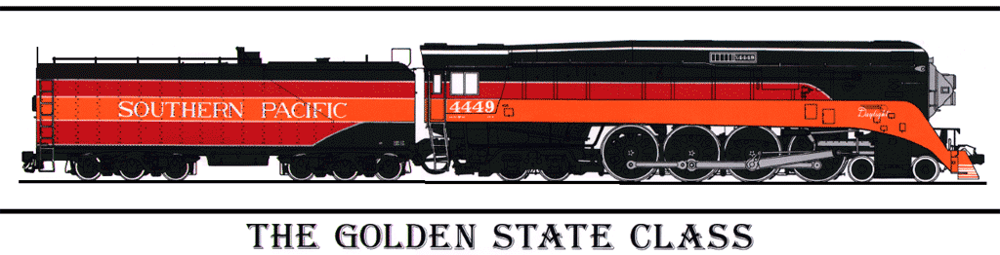
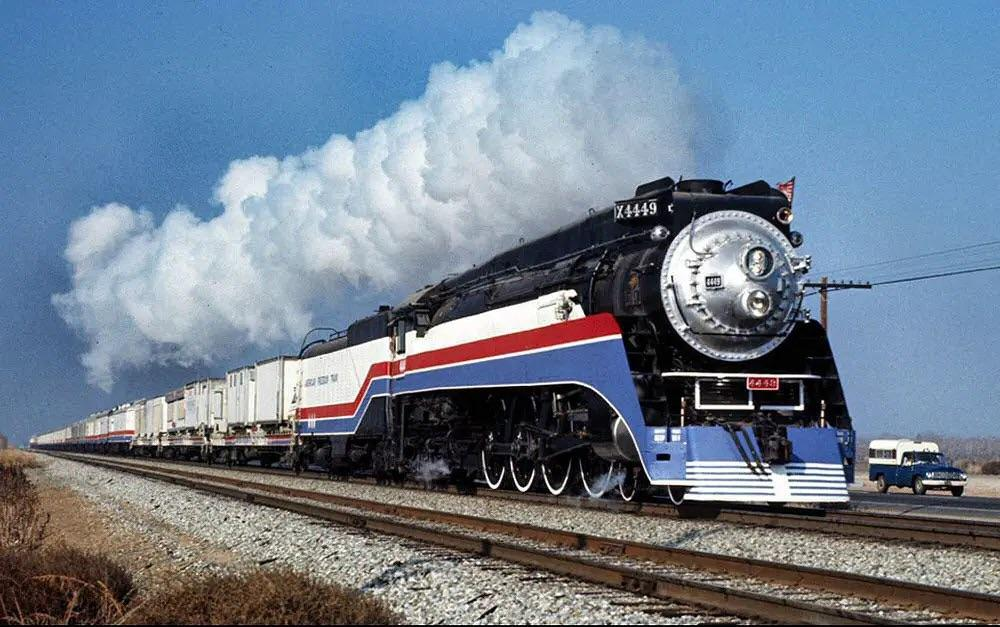

Southern Pacific 4449
What is the SP 4449?
Type: Streamlined 4-8-4 (Northern) GS-4
Built: Lima, Ohio, May 1941
Manufacturer: Lima Locomotive Works
Nickname: The Queen Of Steam, Daylight
Color Scheme: Red-And-Orange "Daylight" paint scheme
Locomotive Classifications
GS-4: GS stands for "Golden State", a nickname for California (where the locomotive was operated in regular service), or "General Service."
4-8-4: 4 Leading Wheels (2 axles) in the very front. These smaller wheels form a "pilot truck" that helps guide the heavy locomotive safely into track curves at high speeds. 8 Driving Wheels (4 axles) in the middle. These are the giant, interconnected wheels powered by the pistons that actually move the train. 4 Trailing Wheels (2 axles) under the cab. These smaller wheels in the back support the massive weight of the locomotive's firebox (the furnace where the fuel is burned).

The Humble Beginnings Of 4449
- 1941–Early 1950s: SP 4449 entered service on May 30, 1941. It initially pulled the premier Coast Daylight between San Francisco and Los Angeles, along with other named Southern Pacific passenger trains. As newer locomotives arrived, it was reassigned to the Golden State Route and Sunset Route, before moving to the Coast Division in the early 1950s.
- 1954 Highlight: On October 17, 1954, SP 4449 teamed up with its sister locomotive, SP 4447, to pull a historic 10-car Railway and Locomotive Historical Society excursion train from Los Angeles to Owenyo, California, and back.
- 1955 Dieselization & Modification: In January 1955, diesel engines took over the Coast Daylight. Later that year, as one of the last steam engines still wearing the colorful Daylight livery, SP 4449 was stripped of its streamlined side skirting and repainted black and silver to reduce maintenance costs.
- Late Career: Reassigned to the San Joaquin Valley line, the modified locomotive spent its remaining revenue years pulling fast freights and helper services, while occasionally stepping in to haul passenger trains like the San Joaquin Daylight.
The Retirement
4449 was semi-retired from service on September 24, 1956, and was kept as an emergency back-up locomotive until it was officially retired on October 2, 1957, and was donated to the city of Portland, Oregon, on April 24, 1958, where it was placed on outdoor public display in Oaks Park.
The Restoration
- 1958 Portland Donation: On April 24, 1958, the black-and-silver SP 4449 was donated to Portland, Oregon, for display at Oaks Park. It wasn't chosen for its historic value, but simply because it sat at the front of the scrap line and was the easiest locomotive to move.
- Deterioration and Vandalism: During its years on outdoor public display, the locomotive was severely neglected. It suffered heavy weather damage, repeated vandalism, and the theft of key components, including its whistle and builder's plates.
- 1974 Freedom Train Selection: In 1974, evaluators inspected SP 4449 as a potential candidate to pull the American Freedom Train. Because its size, power, and aesthetics perfectly fit the Bicentennial tour—and its bearings and rods were found to be in good shape—it was officially selected for full restoration.

Next Page